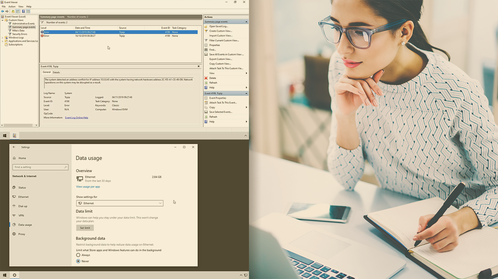

My Services

Windows Troubleshooting
Fix system errors, software issues, driver problems, and performance optimization.

LAN & Network Setup
LAN configuration, IP assignment, VLAN setup, and basic network troubleshooting.

Router & WiFi Setup
Secure router configuration, WiFi optimization, and connection issues support.

Software Installation
Professional installation and setup of essential software and tools.